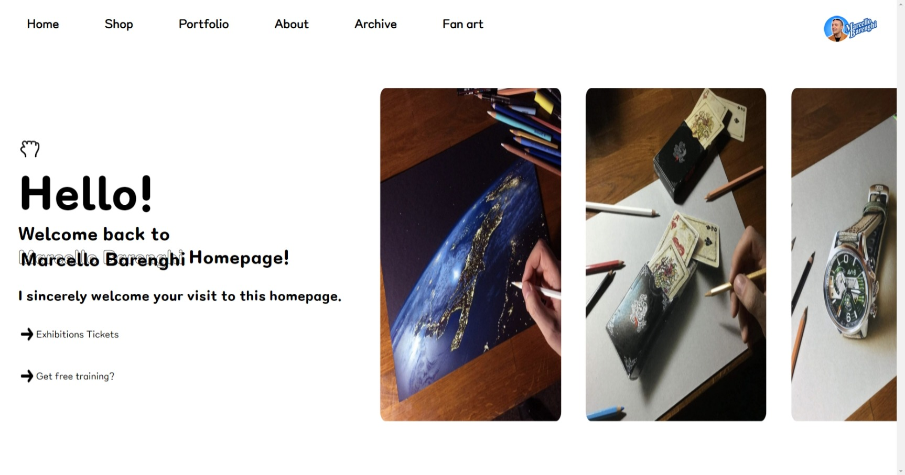

Marcello Barenghi Website
"2021.11.29. ~ 2021.12.06."
Marcello Barenghi Website
"2021.11.29. ~ 2021.12.06."
이탈리아의 화가이자 유튜버인 마르첼로 바렌기의 홈페이지를 제작하였습니다.
주제와 하고 싶던 레이아웃 모두 반 고흐 미술관 사이트에서 영감을 받아 전체적인 디자인은 위 사이트를 많이 참고하였습니다.
원페이지로 구성되어 있으며, 모바일 사용자에 맞게 반응형 홈페이지로 제작되었습니다.
